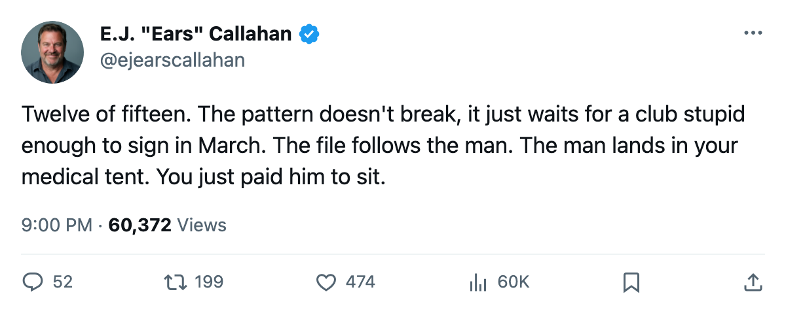
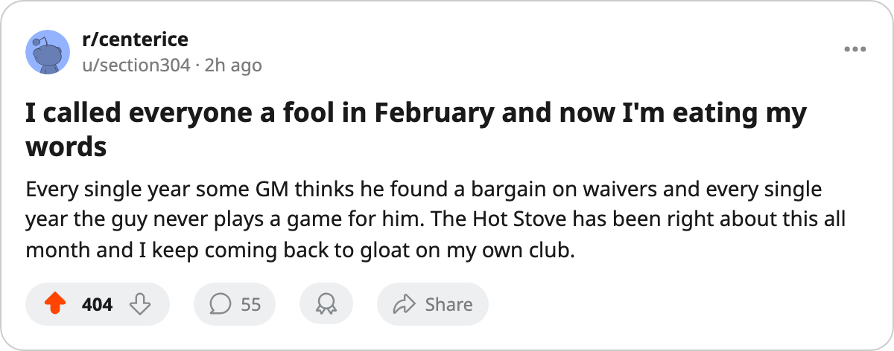

BOS
BOSRUMOR METER: 8 Signings Filed. 6 Are on IR. The Hit Rate Sits at 80 Percent.
The pattern the desk called on March 7 keeps feeding. Four clubs nobody has written about this month all got a man on a body part.
 E.J. "Ears" CallahanInsider · The Hot Stove
E.J. "Ears" CallahanInsider · The Hot Stove

The signing-injury pattern holds at 80 percent. Two escapees remain.

The league filed 8 signings between March 20 and March 21. Six of them are on the injured list with a named body part and a return date past today. The desk's pattern, first logged on March 7, is now 12 of 15. The hit rate is 80.0 percent.
The 2 who escaped carry small money and small names: Kris Vernarsky, who Boston took on a $48,480 deal, and Steve Brule, who Atlanta took on a $432,730 deal. Neither has a body part on the league's list. Everyone else went straight to the tent.
Kip Miller came to  Washington Capitals on March 20 for $25,650. His shoulder is on the list with a return date of May 1.
Washington Capitals on March 20 for $25,650. His shoulder is on the list with a return date of May 1.  Bryan Berard77, also filed March 20, went to Boston on a $221,780 deal and landed on the list with a neck, out until March 29. Dennis Seidenberg74 signed with
Bryan Berard77, also filed March 20, went to Boston on a $221,780 deal and landed on the list with a neck, out until March 29. Dennis Seidenberg74 signed with  Philadelphia Flyers for $315,600 the same day. His foot keeps him out until June 3. That's the season for a Philadelphia club that won't see October in this structure.
Philadelphia Flyers for $315,600 the same day. His foot keeps him out until June 3. That's the season for a Philadelphia club that won't see October in this structure.
 Shayne Corson72 signed with
Shayne Corson72 signed with  Montreal Canadiens on March 20 for $360,510. His wrist is on the list, out until April 14. The Canadiens sit 60 points in the Northeast with the league's fourth-lowest club morale at 87.5. They added a 76-overall winger who won't play again this year.
Montreal Canadiens on March 20 for $360,510. His wrist is on the list, out until April 14. The Canadiens sit 60 points in the Northeast with the league's fourth-lowest club morale at 87.5. They added a 76-overall winger who won't play again this year.
 Brad May75 went to
Brad May75 went to  Edmonton Oilers for $166,090 on March 21. Back, out until April 10. Lynn Loyns76 went to
Edmonton Oilers for $166,090 on March 21. Back, out until April 10. Lynn Loyns76 went to  San Jose Sharks for $423,370. Hand, out until June 11. San Jose has 68 points and the Pacific's worst record.
San Jose Sharks for $423,370. Hand, out until June 11. San Jose has 68 points and the Pacific's worst record.
The math holds at 80
| Signing | Club | Date | Body part | Return |
|---|---|---|---|---|
| Kip Miller | WSH | 2005-03-20 | Shoulder | 2005-05-01 |
| Kris Vernarsky | BOS | 2005-03-20 | — | — |
| Bryan Berard | BOS | 2005-03-20 | Neck | 2005-03-29 |
| Dennis Seidenberg | PHI | 2005-03-20 | Foot | 2005-06-03 |
| Steve Brule | ATL | 2005-03-20 | — | — |
| Shayne Corson | MTL | 2005-03-20 | Wrist | 2005-04-14 |
| Brad May | EDM | 2005-03-21 | Back | 2005-04-10 |
| Lynn Loyns | SJ | 2005-03-21 | Hand | 2005-06-11 |
The desk called this pattern on March 7 when a new consecutive run started at 6. That streak broke at 6 for 7 on the batch filed the week of the deadline. The hit rate never wavered. It was 6 of 7, now 12 of 15. 80.0 percent across the league, and the desk isn't waving it off.
A league source who works a training camp told the desk he's been asked this three times this month. "You sign a man in March, you're signing him off a list of guys who cleared waivers or came off a team that already knew something. The club signing him didn't know. The club that let him go did."
The teams hoarding picks and dumping salary at the deadline aren't the only ones leaking bad information. The clubs picking up scraps in late March are inheriting a medical file nobody transferred.
The 2 who escaped might not stay clean. Vernarsky hasn't played a game in this window. Brule carries a $432,730 cap hit for a 74-overall forward. Neither is a name anyone's tracking, which is exactly why the desk is watching them.
Garrett Turmel told The Tunnel's Jan Kowalczyk this week about what the deadline costs a front office. "The deadline isn't one day, it's the last day of a month of phone calls, and most of the calls don't get you anything." The calls that do get you something sometimes get you a body part.

